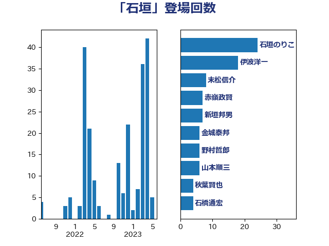

単語「石垣」

| 石垣のりこ | 立憲民主党 | 24 回 |
| 伊波洋一 | 無所属 | 18 回 |
| 末松信介 | 自由民主党 | 8 回 |
| 赤嶺政賢 | 日本共産党 | 7 回 |
| 新垣邦男 | 立憲民主党 | 7 回 |
| 金城泰邦 | 公明党 | 6 回 |
| 野村哲郎 | 自由民主党 | 6 回 |
| 山本順三 | 自由民主党 | 6 回 |
| 秋葉賢也 | 自由民主党 | 4 回 |
| 石橋通宏 | 立憲民主党 | 4 回 |
| 森本真治 | 立憲民主党 | 4 回 |
| 庄子賢一 | 公明党 | 4 回 |
| 山田宏 | 自由民主党 | 4 回 |
| 佐藤正久 | 自由民主党 | 4 回 |
| 須藤元気 | 無所属 | 3 回 |
| 西銘恒三郎 | 自由民主党 | 3 回 |
| 松村祥史 | 自由民主党 | 3 回 |
| 山下雄平 | 自由民主党 | 3 回 |
| 鰐淵洋子 | 公明党 | 2 回 |
| 青木一彦 | 自由民主党 | 2 回 |
| 阿達雅志 | 自由民主党 | 2 回 |
| 長浜博行 | 無所属 | 2 回 |
| 豊田俊郎 | 自由民主党 | 2 回 |
| 紙智子 | 日本共産党 | 2 回 |
| 浜田靖一 | 自由民主党 | 2 回 |
| 横沢高徳 | 立憲民主党 | 2 回 |
| 松沢成文 | 日本維新の会 | 2 回 |
| 川田龍平 | 立憲民主党 | 2 回 |
| 岡田直樹 | 自由民主党 | 2 回 |
| 山東昭子 | 自由民主党 | 2 回 |
| 小池晃 | 日本共産党 | 2 回 |
| 古賀之士 | 立憲民主党 | 2 回 |
| 高橋千鶴子 | 日本共産党 | 1 回 |
| 高橋克法 | 自由民主党 | 1 回 |
| 馬場伸幸 | 日本維新の会 | 1 回 |
| 阿部知子 | 立憲民主党 | 1 回 |
| 長友慎治 | 国民民主党 | 1 回 |
| 足立敏之 | 自由民主党 | 1 回 |
| 舟山康江 | 国民民主党 | 1 回 |
| 石井苗子 | 日本維新の会 | 1 回 |
| 田島麻衣子 | 立憲民主党 | 1 回 |
| 滝波宏文 | 自由民主党 | 1 回 |
| 水岡俊一 | 立憲民主党 | 1 回 |
| 榛葉賀津也 | 国民民主党 | 1 回 |
| 松野明美 | 日本維新の会 | 1 回 |
| 木村次郎 | 自由民主党 | 1 回 |
| 岸真紀子 | 立憲民主党 | 1 回 |
| 岸田文雄 | 自由民主党 | 1 回 |
| 山井和則 | 立憲民主党 | 1 回 |
| 小野寺五典 | 自由民主党 | 1 回 |
| 小西洋之 | 立憲民主党 | 1 回 |
| 小沼巧 | 立憲民主党 | 1 回 |
| 寺田稔 | 自由民主党 | 1 回 |
| 宮本岳志 | 日本共産党 | 1 回 |
| 奥下剛光 | 日本維新の会 | 1 回 |
| 國場幸之助 | 自由民主党 | 1 回 |
| 吉田宣弘 | 公明党 | 1 回 |
| 住吉寛紀 | 日本維新の会 | 1 回 |
| 五十嵐清 | 自由民主党 | 1 回 |
| 上月良祐 | 自由民主党 | 1 回 |